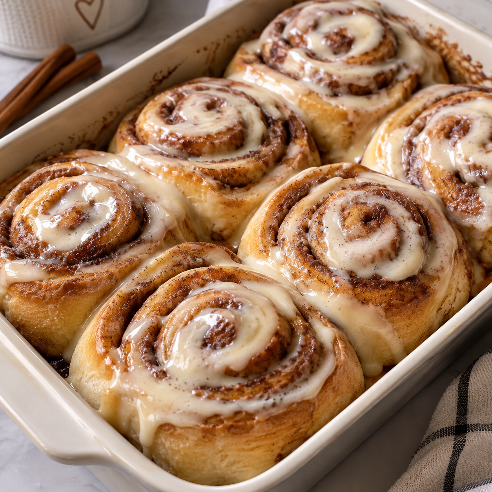

Cinnamon Rolls
Warm, gooey, and made to melt your heart.
⏱ 30 min
Prep Time
⏱ 12 min
Cook Time
Easy
Difficulty
☆ 4.9
128 reviews
💗 Tips for bakery-style cinnamon rolls .For extra softness: Don't add too much flour. The dough should feel soft and slightly tacky. .For a gooey center: Avoid overbaking. .For the best flavor: Use brown sugar in the filling. .For extra creamy rolls: Add a little more cream cheese to the icing.